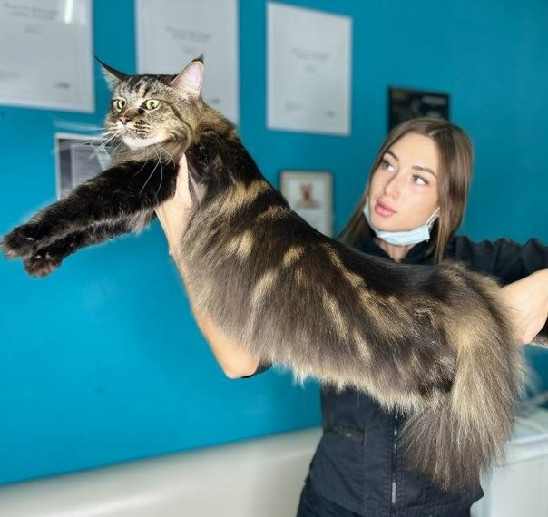
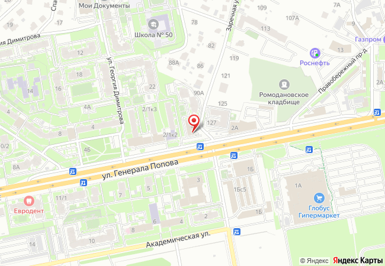
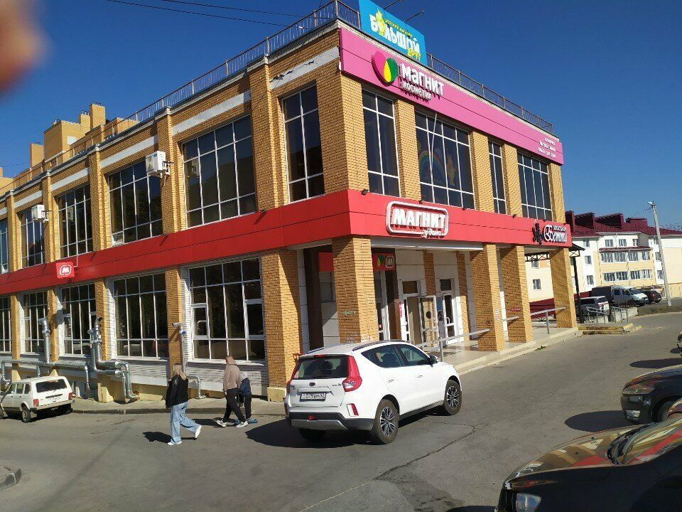

Комплексный груминг
Мытьё, сушка, когти, уши и стрижка — по стандарту породы или по вашим пожеланиям. В подарок — парфюмирование.
с теплотой и любовью
Топ-грумер Анна, в груминге с 2014 года. Стрижка и комплекс для собак, экспресс-линька, груминг кошек и стрижка «под льва» — премиальная косметика по типу шерсти.
Услуги
Мытьё, сушка, когти, уши и стрижка — по стандарту породы или по вашим пожеланиям. В подарок — парфюмирование.
Для собак и кошек: убираем лишний подшёрсток — шерсть мягкая и блестящая, дома меньше линьки.
Вычес короткошёрстных пород: мопсы, французские бульдоги, бигли, таксы, корги, хаски и другие.
Стрижка кошки машинкой, 2 мм — с мытьём или без.
Профессиональный вычес: когти, вычес, обезжиривание, мойка, уши, сушка. Можно без мытья.
Мытьё, сушка, когти, уши, подушечки лап и паховая зона, оформление мордочки.
Когти, чистка ушей и зубов, параанальные железы, обработка от блох, маска по типу шерсти.
Напишите или позвоните — подскажем, какой уход нужен вашему питомцу.
СвязатьсяМытьё очищающим шампунем; шампунь по типу шерсти; увлажняющий кондиционер; сушка, стрижка когтей; чистка ушного канала; стрижка/гигиенический уход/экспресс-линька (в зависимости от породы) выполненные по вашим пожеланиям или в соответствии со стандартом породы.
Груминг выполняется профессиональными инструментами и с применением премиальной косметики по типу шерсти. В подарок к комплексу — парфюмирование вашего питомца.
Цены
Все цены — за комплексный груминг, если не указано другое. При сильной спутанности шерсти стоимость может быть увеличена (от 300 ₽ в зависимости от породы) — мастер предупредит перед процедурой. Цены на груминг-услуги могут быть увеличены в процессе на 10–30% на усмотрение мастера в зависимости от запущенности шерсти, обнаружения паразитов и т.п.
Наши работы

Почему к нам возвращаются
Мейн-куны после неудачных походов к грумерам, неудержимые бигли, собаки, которые дома не дают стричь когти, — клиенты пишут, что у нас всё прошло спокойно.
Хаски, самоеды, бернские зенненхунды по 50+ кг. Однажды за утро вымыли восемь шпицев.
Повышаем квалификацию на курсах в Москве — в копилке новые дипломы и техники.
Вход с улицы, парковка на территории. Оплата любая.
Вакансия
Ищем грумера в салон в Калуге (ул. Генерала Попова, 2). В команду также нужен помощник грумера — подойдёт, если хотите расти в профессии.
В сообщения можно выслать портфолио — посмотрим и ответим. Напишите или позвоните — расскажем о деталях и подберём удобный график.
Позвонить Анне Отправить портфолио ВКонтакте Вакансия на Авито или в MAX по номеру 8 (910) 593-22-82Отзывы
Перед визитом
Владелец обязан предупредить грумера о любых особенностях питомца: поведение, здоровье и т.п.
Запись
Удобнее всего — в MAX по номеру 8 (910) 593-22-82. Также по телефону или в сообщения группы ВКонтакте.
Порода, вес, что нужно сделать и особенности характера — подскажем, как лучше, и назовём цену.
Работаем каждый день с 10:00 до 20:00.
Контакты

